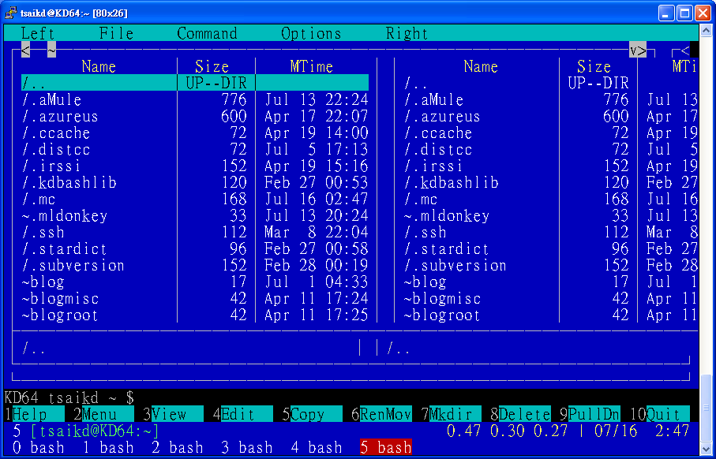
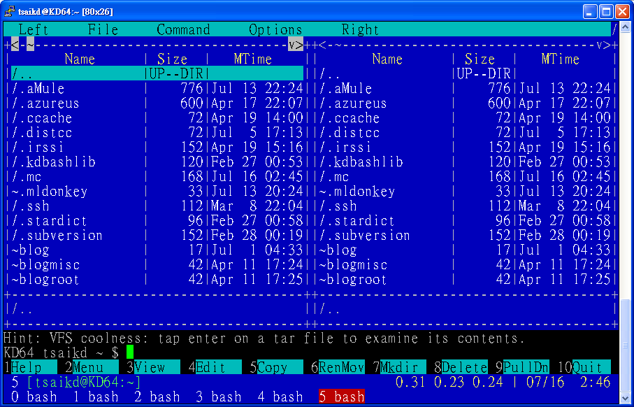
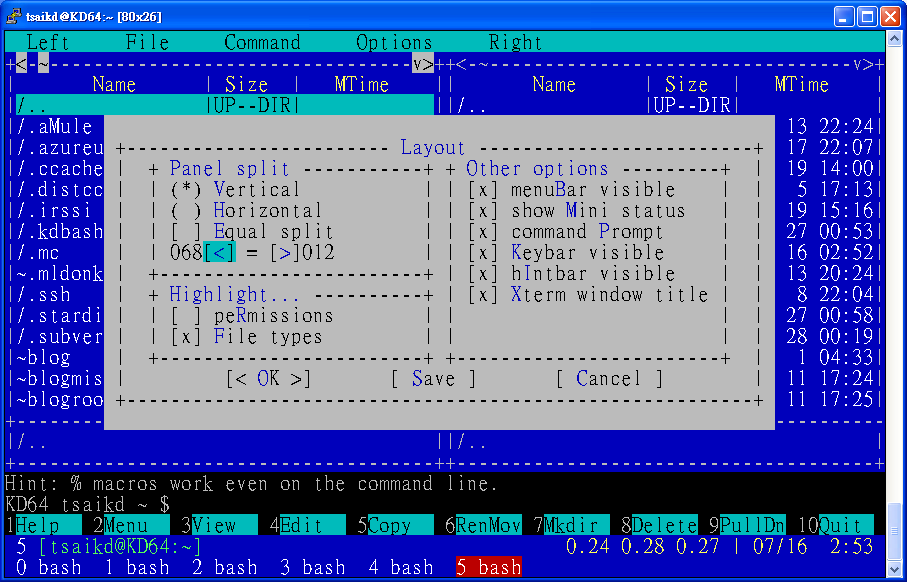
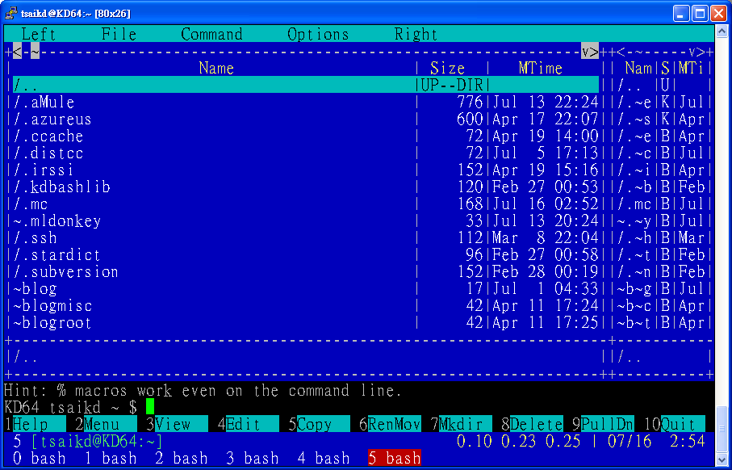
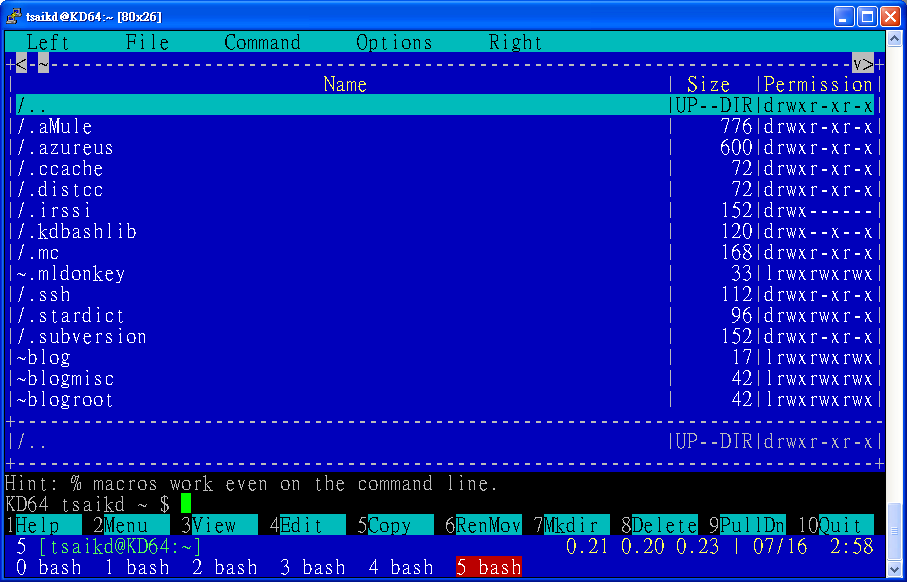

Midnight Commander (mc)
16/Jul 2007
GNU Midnight Commander cli-based file manager
這是一個文字模式的檔案總管
其實在幾個月前就在用這個東西了
現在幾乎每個人都是在圖形介面下操作電腦
不論是用 KDE, Gnome, or Fluxbox … etc
當然像 KDE 或是 Gnome 都有一套圖形介面的檔案總管可以用
所以一般人是用不到 mc 的
不過我的小 nb 硬碟小
又有雙作業系統
所以只好盡量選擇輕量型的軟體來用
像 KDE 跟 Gnome 都是屬於大怪獸
所以我是用 Fluxbox 來當桌面環境
如果要用 KDE 或是 Gnome 的檔案總管又要裝一堆相關的套件
本來還有 PCManFM 可以選
不過隨著 PCMan 本人開始實習之後
發展的進度好像有點遲緩
然後又不小心看到了 mc 這個東西
可能是習慣的關係
我覺得還有一些小問題
不過總體上算不錯的了
一開始遇到的第一個問題就是在 screen 的顯示中排版的問題
加上參數 -a 可以解決
mc

mc -a

再來是視窗被切成兩塊了
我想應該很少人會希望檔案總管一次顯示兩個目錄吧
不過 mc 預設就是這樣
雖然這樣有些好處
像是移動檔案的時候就可以迅速的從左邊目錄移到右邊目錄
不過要是沒有用到的話就會覺得另一邊真是佔空間
一開始還不知道要怎麼解決
只能去 Options -> Layout... -> Panel split ->

把右邊盡量縮小
雖然看起來有點怪
不過左邊的空間多了許多
剛剛才發現
原來還有另一個更好的解決方法
在 Left -> Listing mode... -> User defined: ->
把 half 改成 full 就好了


不過又遇到了一個小問題
就是要切換 Listing mode 的話都要從選單上重選一次
而且左右兩個 panel 都要選
不然用 tab 切換 panel 的時候就會覺得怪怪的…@_@
不知道有沒有辦法設定快速鍵來切換 Listing mode ??
然後是最麻煩的 binding 問題
就是某類的檔案按下去要用某個程式開啟
雖然程式有預設一個 bindings method
不過顯然程式不夠完善
(要完善太難了…誰知道你裝了多少奇奇怪怪的東西…
還有許多未知的軟體啊…XD)
所以還要根據自己電腦上的環境來做一些設定
這個就需要一點技術了
不過在玩 Linux 的人多少對這些東西有點習慣了
所以看看預設的範例就大概知道怎麼改成自己需要的形式了
不過要是改了的話
程式更新也不會把你自定的 bindings 一起更新
因為改了之後會存在 ~/.mc/bindings
之後程式就只會讀這個檔案
我覺得應該要設計一個 bindings-custom 之類的
除了 default 的 bindings 之外
再 load 這個 bindings-custom
這樣應該比較好
- ~/.mc/bindings
...
---
### tsaikd ###
# configure text file
shell/.conf
Open=%var{EDITOR:vi} %f
---
# video .rmvb .flv .mkv
regex/\.([rR][mM][vV][bB]|[fF][lL][vV]|[mM][kK][vV])$
Open=(mplayer %f &>/dev/null &)
---
# html .mht
regex/\.([mM][hH][tT])$
Open=(opera %f &>/dev/null &)
---
### end tsaikd ###
---
...